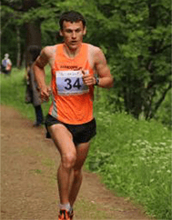

Бабчин олег
Руководитель и основатель
проекта
Руководитель и основатель
проекта
Всю жизнь обожал бегать. В детстве я еще не знал таких терминов и слов как: МПК, АНП, ПАНО, лактат, медленные и быстрые мышечные волокна, для того, что бы успеть полюбить бег, этого было не нужно. Загнать себя до такого состояния, когда выворачивает наизнанку, в полуобморочном состоянии, для меня было пустяком. Мне это даже нравилось, мазохист что-ли? Нет, просто гиперактивность. Бегал везде и постоянно. Приход на детскую площадку в семилетнем возрасте, обычно заканчивался преодолением полосы препятствий часа на 2-3. Придумывал испытания сам, заставлял участвовать друзей, и все под точным хронометражем. Иногда мне кажется, что я родился с часами на руке.

Личные рекорды
1500 м – 3.57,23 (2010)
3000 м – 8.28,52 (2012)
5000 м – 14.41,95 (2012)
10 км – 30.31 (2010)
21,1 км – 1:08.30 (2011)
30 км – 1:39.47 (2011)
Марафон – 2:32.48 (2015)